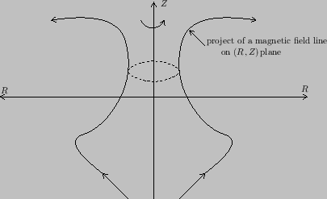

Next: Contours of on plane Up: Axisymmetric magnetic field Previous: Gauge transformation of
For axial symmetry system, we can define magnetic surfaces in a trivial way
(for non-axisymmetric system, the definition may be a little harder, I will
consider this later). The axial symmetry of tokamak magnetic field allows us
to introduce a surface of revolution that is generated by rotating the
projection of a magnetic field line on  plane around the axis of
symmetry,
plane around the axis of
symmetry,  axis. The unique property of this revolution surface is that no
field line point-intersects it and a field line with one point on it will have
the whole field line on it. This revolution surface is usually called magnetic
surface or flux surface. For instance, consider an arbitrary magnetic field
line, whose projection on
axis. The unique property of this revolution surface is that no
field line point-intersects it and a field line with one point on it will have
the whole field line on it. This revolution surface is usually called magnetic
surface or flux surface. For instance, consider an arbitrary magnetic field
line, whose projection on  plane is shown in Fig. 1. A
magnetic surface is generated by rotating the projection line around the
plane is shown in Fig. 1. A
magnetic surface is generated by rotating the projection line around the  axis.
axis.
|  |
Because  is constant along a magnetic field line and
is constant along a magnetic field line and  is
independent of
is
independent of  , it follows that the value of
, it follows that the value of  is constant on a
magnetic surface. Therefore
is constant on a
magnetic surface. Therefore  can be used as labels of magnetic surfaces.
can be used as labels of magnetic surfaces.
yj 2018-03-09